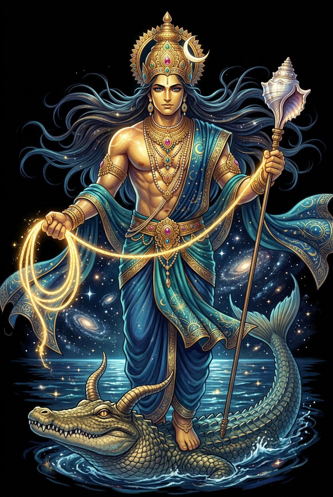

The Authentic Orthography
Cosmic Order, Oceans, Law · ‘Allenveloping Sky’, N. of an Āditya (in the Veda commonly associated with Mitra [q.v.] and presiding over the night as Mitra over the day, but often celebrated separately

Unicode restoration and ASCII comparison
वरुण
The name in its original Sanskrit form. Varuṇa (वरुण) is attested as cosmic order, oceans, law — “‘Allenveloping Sky’, N. of an Āditya (in the Veda commonly associated with Mitra [q.v.] and presiding over the night as Mitra over the day, but often celebrated separately”. Its nasal retroflexes carry the full phonetic and orthographic weight of the source tradition.
varuna
Reduced to plain varuna, the name loses everything that made it specific: nasal retroflexes. What remains is an ASCII string that machines can parse but that no longer speaks with its original voice.
Varuṇa
The Unicode restoration recovers what ASCII flattened. Varuṇa restores nasal retroflexes, returning the name to its original written dignity. The domain encodes to Punycode, but the browser displays the truth.
Varuṇa.com → xn--varua-6l1b.com
The non-ASCII characters in Varuṇa are encoded while the ASCII remains visible. To the DNS, it is Punycode. To humanity, it is Varuṇa.
How Varuṇa travels from ancient script to the modern URL
Sanskrit Varuṇa; from the root vṛ- “to cover, encompass"; the Vedic guardian of cosmic order and the waters.
Cosmic Order, Oceans, Law
The IAST form Varuṇa uses registrable Latin diacritics; the Devanagari form is not supported in .com.
How Varuṇa was spoken
Ṛta, Oaths, and the Night Sky
Varuṇa is the Vedic sovereign of ṛta, the cosmic order that binds gods and mortals alike. He is the lord of all waters — rivers, seas, rain, and the underworld streams — and the guardian of truth who sends a thousand spies to watch the world. To swear falsely before Varuṇa is to invite disease, disaster, and the loosening of the bonds that hold existence together.
As guardian of ṛta, Varuṇa keeps sun, moon, seasons, and sacrifice moving in their proper courses.
Rivers, rain, oceans, and the hidden springs all flow by his authority; drought is his noose tightened.
He binds oath-breakers with the pāśa noose and loosens it for those who confess and speak truth.
His thousand eyes are the stars; he sees the path of ships, the flight of birds, and the secrets of hearts.
Stories of Varuṇa
Varuṇa is the Vedic sovereign of the cosmic order (ṛta), the lord of waters, and the guardian of truth. He binds offenders with his noose (pāśa), sends a thousand spies to watch the world, and holds the night sky in his sway. To swear falsely before Varuṇa is to invite disease, disaster, and cosmic rupture.
Varuṇa is praised in the Ṛgveda as the god who sees all and knows all. His spies — the thousand-eyed — move through the world observing every act, every lie, every hidden crime. Unlike a distant judge, Varuṇa is intimately present: he knows the wandering of birds, the path of ships, and the secret thoughts of human beings. Nothing done in darkness escapes him.
The pāśa, Varuṇa's noose, is both punishment and release. He binds those who break ṛta, the cosmic law, and he loosens the bonds of those who confess and atone. Disease, misfortune, and drought are understood as the tightening of the noose; sacrifice, truth, and repentance loosen it. Varuṇa is therefore a god of both terror and mercy, the enforcer of a law that can be repaired.
Varuṇa dwells in the waters — rivers, seas, rain, and the cosmic ocean — and through them he sustains ṛta. The regular fall of rain, the flow of rivers, and the cycle of seasons are all expressions of his order. In later tradition he becomes a sea-god, but in the Vedas he is something larger: the divine principle that keeps truth liquid, moving, and inescapable.
Varuṇa is often paired with Indra, the warrior-storm god. Where Indra acts with thunderbolt and force, Varuṇa governs by law and vigilance. Together they represent the two faces of sovereignty: power and justice. Some hymns call them kings side by side, and in ritual they receive offerings together. The pairing expresses the Vedic ideal that might must be answerable to ṛta.
The lore you have read is the surface — the living myth. Beneath it lies the scholarship: etymology, reconstructed pronunciation, Unicode character breakdown, and the cultural legacy of Varuṇa.
Enter Extended Lore